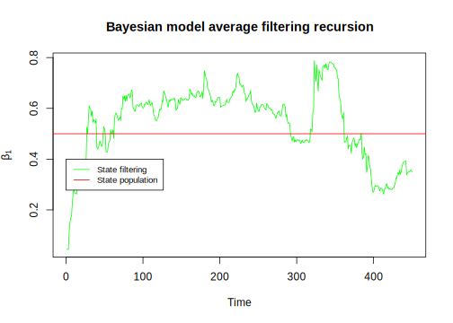
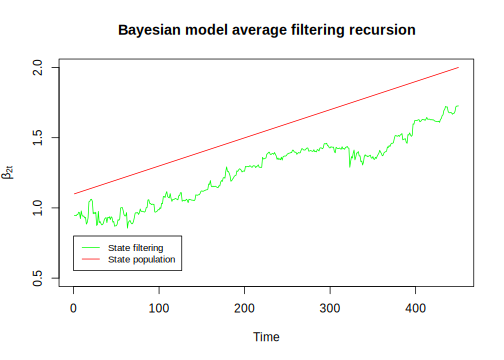

10.2 The Gaussian linear model
The Gaussian linear model specifies \(\boldsymbol{y}=\alpha\boldsymbol{i}_N+\boldsymbol{X}_m\boldsymbol{\beta}_m+\boldsymbol{\mu}_m\) such that \(\boldsymbol{\mu}_m\sim{N}(\boldsymbol{0},\sigma^2\boldsymbol{I}_n)\), and \(\boldsymbol{X}_m\) does not have the column of ones. Following G. M. Koop (2003), the conjugate prior for the location parameters is \(\boldsymbol{\beta}_m|\sigma^2 \sim {N}(\boldsymbol{\beta}_{m0}, \sigma^2 \boldsymbol{B}_{m0})\), and the priors for \(\sigma^2\) and \(\alpha\) can be improper, as these parameters are common to all models \(\mathcal{M}_m\). Particularly, \(\pi(\sigma^2)\propto 1/\sigma^2\) (Jeffreys’ prior for the linear Gaussian model, see Ibrahim and Laud (1991)) and \(\pi(\alpha)\propto 1\).
The selection of the hyperparameters of \(\boldsymbol{\beta}_m\) is more critical, as these parameters are not common to all models. A very common prior for the location parameters in the BMA literature is the Zellner’s prior (Zellner 1986), where \(\boldsymbol{\beta}_{m0}=\boldsymbol{0}_m\) and \(\boldsymbol{B}_{m0}=(g_m\boldsymbol{X}_m^{\top}\boldsymbol{X}_m)^{-1}\). Observe that this covariance matrix is similar to the covariance matrix of the ordinary least squares estimator of the location parameters. This suggests that there is compatibility between the prior information and the sample information, and the only parameter to elicit is \(g_m\geq 0\), which facilitates the elicitation process, as eliciting covariance matrices is a very hard endeavor.
Following same steps as in Section 3.3, the posterior conditional distribution of \(\boldsymbol{\beta}_m\) has covariance matrix \(\sigma^2\boldsymbol{B}_{mn}\), where \(\boldsymbol{B}_{mn}=((1+g_m)\boldsymbol{X}_m^{\top}\boldsymbol{X}_m)^{-1}\) (Exercise 1), which means that \(g_m=0\) implies a non-informative prior, whereas \(g_m=1\) implies that prior and data information have same weights. We follow Fernandez, Ley, and Steel (2001), who recommend \[\begin{align*} g_m & = \begin{Bmatrix} 1/K^2, & N \leq K^2\\ 1/N, & N>K^2 \end{Bmatrix}. \end{align*}\]
Given the likelihood function, \[\begin{equation*} p(\boldsymbol{\beta}_m, \sigma^2|\boldsymbol{y}, \boldsymbol{X}_m) = (2\pi\sigma^2)^{-\frac{N}{2}} \exp \left\{-\frac{1}{2\sigma^2} (\boldsymbol{y} - \alpha\boldsymbol{i}_N - \boldsymbol{X}_m\boldsymbol{\beta}_m)^{\top}(\boldsymbol{y} - \alpha\boldsymbol{i}_N - \boldsymbol{X}_m\boldsymbol{\beta}_m) \right\}, \end{equation*}\] the marginal likelihood associated with model \(\mathcal{M}_m\) is proportional to (Exercise 1) \[\begin{align*} p(\boldsymbol{y}|\mathcal{M}_m)&\propto \left(\frac{g_m}{1+g_m}\right)^{k_m/2} \left[(\boldsymbol{y}-\bar{y}\boldsymbol{i}_N)^{\top}(\boldsymbol{y}-\bar{y}\boldsymbol{i}_N)-\frac{1}{1+g_m}(\boldsymbol{y}^{\top}\boldsymbol{P}_{X_m}\boldsymbol{y})\right]^{-(N-1)/2}, \end{align*}\] where all parameters are indexed to model \(\mathcal{M}_m\), \(\boldsymbol{P}_{X_m}=\boldsymbol{X}_m(\boldsymbol{X}_m^{\top}\boldsymbol{X}_m)^{-1}\boldsymbol{X}_m\) is the projection matrix on the space generated by the columns of \(\boldsymbol{X}_m\), and \(\bar{y}\) is the sample mean of \(\boldsymbol{y}\).
We implement in our GUI four approaches to perform BMA in the Gaussian linear model: the BIC approximation using the Occam’s window approach, the MC3 algorithm using the analytical expression for calculating the marginal likelihood, an instrumental variable approach based on conditional likelihoods, and dynamic variable selection.
Example: Simulation exercise
Let’s perform a simulation exercise to assess the performance of the BIC approximation using the Occam’s window, and the Markov chain Monte Carlo model composition approaches. Let’s set a model where the computational burden is low and we know the data generating process (population statistical model). In particular, we set 10 regressors such that \(x_k\sim N(1, 1)\), \(k =1,\dots,6\), and \(x_k\sim B(0.5)\), \(k=7,\dots,10\). We set \(\boldsymbol{\beta}=[1 \ 0 \ 0 \ 0 \ 0.5 \ 0, 0, 0, 0, -0.7]^{\top}\) such that just \(x_1\), \(x_5\) and \(x_{10}\) are relevant to drive \(y_i=1+\boldsymbol{x}^{\top}\boldsymbol{\beta}+\mu_i\), \(\mu_i\sim N(0,0.5^2)\). Observe that we just have \(2^{10}=1024\) models in this setting, thus, we can calculate the posterior model probability for each model.
Our GUI uses the commands bicreg and MC3.REG from the package BMA to perform Bayesian model averaging in the linear regression model using the BIC approximation and MC3, respectively. These commands in turn are based on A. Raftery (1995) and Adrian E. Raftery, Madigan, and Hoeting (1997). The following code shows how to perform the simulation and get the posterior mean and standard deviation using these commands with the default values of hyperparameters and tuning parameters.
rm(list = ls()); set.seed(010101)
N <- 1000
K1 <- 6; K2 <- 4; K <- K1 + K2
X1 <- matrix(rnorm(N*K1,1 ,1), N, K1)
X2 <- matrix(rbinom(N*K2, 1, 0.5), N, K2)
X <- cbind(X1, X2); e <- rnorm(N, 0, 0.5)
B <- c(1,0,0,0,0.5,0,0,0,0,-0.7)
y <- 1 + X%*%B + e
BMAglm <- BMA::bicreg(X, y, strict = FALSE, OR = 50)
summary(BMAglm)##
## Call:
## BMA::bicreg(x = X, y = y, strict = FALSE, OR = 50)
##
##
## 8 models were selected
## Best 5 models (cumulative posterior probability = 0.9176 ):
##
## p!=0 EV SD model 1 model 2 model 3
## Intercept 100.0 1.0321222 0.031290 1.032e+00 1.047e+00 1.041e+00
## X1 100.0 1.0018025 0.015274 1.002e+00 1.002e+00 1.002e+00
## X2 3.0 -0.0002625 0.002997 . . -8.826e-03
## X3 2.6 0.0001208 0.002530 . . .
## X4 2.9 0.0002341 0.002910 . . .
## X5 100.0 0.4976248 0.015668 4.976e-01 4.975e-01 4.976e-01
## X6 3.9 -0.0005920 0.004256 . -1.509e-02 .
## X7 2.8 0.0004292 0.005739 . . .
## X8 2.9 0.0004508 0.005860 . . .
## X9 2.9 0.0004729 0.005914 . . .
## X10 100.0 -0.7035270 0.030939 -7.036e-01 -7.036e-01 -7.031e-01
##
## nVar 3 4 4
## r2 0.855 0.855 0.855
## BIC -1.912e+03 -1.906e+03 -1.906e+03
## post prob 0.791 0.039 0.030
## model 4 model 5
## Intercept 1.024e+00 1.024e+00
## X1 1.002e+00 1.002e+00
## X2 . .
## X3 . .
## X4 8.150e-03 .
## X5 4.975e-01 4.976e-01
## X6 . .
## X7 . .
## X8 . 1.569e-02
## X9 . .
## X10 -7.029e-01 -7.034e-01
##
## nVar 4 4
## r2 0.855 0.855
## BIC -1.906e+03 -1.906e+03
## post prob 0.029 0.029## Warning in covMcd(X, alpha = alpha, use.correction = use.correction): The 505-th order statistic of the absolute deviation of variable 7 is
## zero.
## There are 505 observations (in the entire dataset of 1000 obs.) lying
## on the hyperplane with equation a_1*(x_i1 - m_1) + ... + a_p*(x_ip -
## m_p) = 0 with (m_1, ..., m_p) the mean of these observations and
## coefficients a_i from the vector a <- c(0, 0, 0, 0, 0, 0, 1, 0, 0, 0)Models <- unique(BMAreg[["variables"]])
nModels <- dim(Models)[1]
nVistModels <- dim(BMAreg[["variables"]])[1]
PMP <- NULL
for(m in 1:nModels){
idModm <- NULL
for(j in 1:nVistModels){
if(sum(Models[m,] == BMAreg[["variables"]][j,]) == K){
idModm <- c(idModm, j)
}else{
idModm <- idModm
}
}
PMPm <- sum(BMAreg[["post.prob"]][idModm])
PMP <- c(PMP, PMPm)
}
PIP <- NULL
for(k in 1:K){
PIPk <- sum(PMP[which(Models[,k] == 1)])
PIP <- c(PIP, PIPk)
}
plot(PIP)
Means <- matrix(0, nModels, K)
Vars <- matrix(0, nModels, K)
for(m in 1:nModels){
idXs <- which(Models[m,] == 1)
if(length(idXs) == 0){
Regm <- lm(y ~ 1)
}else{
Xm <- X[, idXs]
Regm <- lm(y ~ Xm)
SumRegm <- summary(Regm)
Means[m, idXs] <- SumRegm[["coefficients"]][-1,1]
Vars[m, idXs] <- SumRegm[["coefficients"]][-1,2]^2
}
}
BMAmeans <- colSums(Means*PMP)
BMAsd <- (colSums(PMP*Vars) + colSums(PMP*(Means-matrix(rep(BMAmeans, each = nModels), nModels, K))^2))^0.5
BMAmeans## [1] 1.001771e+00 -5.322016e-05 6.635422e-06 3.721457e-07 4.976335e-01
## [6] -1.271339e-04 1.000932e-08 2.107441e-05 6.578654e-06 -7.035557e-01## [1] 1.527261e-02 1.353624e-03 5.936816e-04 1.163947e-04 1.566698e-02
## [6] 1.987360e-03 2.778896e-05 1.270579e-03 6.997305e-04 3.093389e-02## [1] 6.559266e+01 -3.931680e-02 1.117673e-02 3.197272e-03 3.176320e+01
## [6] -6.397124e-02 3.601905e-04 1.658647e-02 9.401697e-03 -2.274385e+01We can see from the results that the BIC approximation with the Occam’s window, and the MC3 algorithm perform a good job finding the relevant regressors, and their posterior BMA means are very close to the population values. We also see that the BMA results are very similar in the two approaches.
We can perform Bayesian model averaging in our GUI for linear Gaussian models using the BIC approximation and MC3 using the following Algorithms. We ask in Exercise 2 to perform BMA using the dataset 10ExportDiversificationHHI.csv from Jetter and Ramírez Hassan (2015).
Algorithm: Bayesian Model Averaging in Linear Gaussian Models using the Bayesian Information Criterion
Select Bayesian Model Averaging on the top panel
Select Normal data model using the left radio button
Select BIC using the right radio button under Which type do you want to perform?
Upload the dataset, selecting first if there is a header in the file and the kind of separator in the csv file of the dataset (comma, semicolon, or tab). Then, use the Browse button under the Choose File legend
Type the OR number of the Occam’s window in the box under OR: Number between 5 and 50 (this step is optional, as the default value is 50)
Click the Go! button
Analyze results: After a few seconds or minutes, a table appears showing, for each regressor in the dataset, the PIP (posterior inclusion probability, p!=0), the BMA posterior mean (EV), the BMA standard deviation (SD), and the posterior mean for models with the highest PMP. At the bottom of the table, for the models with the largest PMP, the number of variables (nVar), the coefficient of determination (r2), the BIC, and the PMP (post prob) are displayed
Download posterior results using the Download results using BIC button. Two files are provided:
- The first file contains the best models by row according to the PMP (last column), indicating variable inclusion with a 1 (0 indicates no inclusion)
- The second file contains the PIP, the BMA expected value, and the standard deviation for each variable in the dataset
- The first file contains the best models by row according to the PMP (last column), indicating variable inclusion with a 1 (0 indicates no inclusion)
Algorithm: Bayesian Model Averaging in Linear Gaussian Models using Markov Chain Monte Carlo Model Composition
Select Bayesian Model Averaging on the top panel
Select Normal data model using the left radio button
Select MC3 using the right radio button under Which type do you want to perform?
Upload the dataset, selecting first if there is a header in the file and the kind of separator in the csv file of the dataset (comma, semicolon, or tab). Then, use the Browse button under the Choose File legend
Select MC3 iterations using the Range slider under the label MC3 iterations:
Click the Go! button
Analyze results: After a few seconds or minutes, a table appears showing, for each regressor in the dataset, the PIP (posterior inclusion probability, p!=0), the BMA posterior mean (EV), the BMA standard deviation (SD), and the posterior mean for models with the highest PMP. At the bottom of the table, for the models with the largest PMP, the number of variables (nVar), the coefficient of determination (r2), the BIC, and the PMP (post prob) are displayed
Download posterior results using the Download results using BIC button. Two files are provided:
- The first file contains the best models by row according to the PMP (last column), indicating variable inclusion with a 1 (0 indicates no inclusion)
- The second file contains the PIP, the BMA expected value, and the standard deviation for each variable in the dataset
- The first file contains the best models by row according to the PMP (last column), indicating variable inclusion with a 1 (0 indicates no inclusion)
We show in the following code how to program a MC3 algorithm from scratch to perform BMA using the setting from the previous simulation exercise. The first part of the code is the function to calculate the log marginal likelihood. This is a small simulation setting, thus we can calculate the marginal likelihood for all 1024 models, and then calculate the posterior model probability standardizing using the model with the largest log marginal likelihood. We see from the results that this model is the data generating process (population statistical model). We also find that the posterior inclusion probabilities for \(x_{1}\), \(x_{5}\) and \(x_{10}\) are 1, whereas the PIP for the other variables are less than 0.05.
Although BMA allows incorporating model uncertainty in a regression framework, sometimes it is desirable to select just one model. Two compelling alternatives are the model with the largest posterior model probability, and the median probability model. The latter is the model which includes every predictor that has posterior inclusion probability higher than 0.5. The first model is the best alternative for prediction in the case of a 0–1 loss function (Clyde and George 2004), whereas the second is the best alternative when there is a quadratic loss function in prediction (Barbieri and Berger 2004). In this simulation, the two criteria indicate selection of the data generating process.
We also show how to estimate the posterior mean and standard deviation based on BMA in this code. We see that the posterior means are very close to the population parameters.
rm(list = ls()); set.seed(010101)
N <- 1000
K1 <- 6; K2 <- 4; K <- K1 + K2
X1 <- matrix(rnorm(N*K1,1 ,1), N, K1)
X2 <- matrix(rbinom(N*K2, 1, 0.5), N, K2)
X <- cbind(X1, X2); e <- rnorm(N, 0, 0.5)
B <- c(1,0,0,0,0.5,0,0,0,0,-0.7)
y <- 1 + X%*%B + e
LogMLfunt <- function(Model){
indr <- Model == 1
kr <- sum(indr)
if(kr > 0){
gr <- ifelse(N > kr^2, 1/N, kr^(-2))
Xr <- matrix(Xnew[ , indr], ncol = kr)
PX <- Xr%*%solve(t(Xr)%*%Xr)%*%t(Xr)
s2pos <- c((t(y - mean(y))%*%(y - mean(y))) - t(y)%*%PX%*%y/(1 + gr))
mllMod <- (kr/2)*log(gr/(1+gr))-(N-1)/2*log(s2pos)
}else{
gr <- ifelse(N > kr^2, 1/N, kr^(-2))
s2pos <- c((t(y - mean(y))%*%(y - mean(y))))
mllMod <- (kr/2)*log(gr/(1+gr))-(N-1)/2*log(s2pos)
}
return(mllMod)
}
combs <- expand.grid(c(0,1), c(0,1), c(0,1), c(0,1), c(0,1),c(0,1), c(0,1), c(0,1), c(0,1), c(0,1))
Xnew <- apply(X, 2, scale)
mll <- sapply(1:2^K, function(s){LogMLfunt(matrix(combs[s,], 1, K))})
MaxPMP <- which.max(mll); StMarLik <- exp(mll-max(mll))
PMP <- StMarLik/sum(StMarLik)
PMP[MaxPMP]## [1] 0.7705196## Var1 Var2 Var3 Var4 Var5 Var6 Var7 Var8 Var9 Var10
## 530 1 0 0 0 1 0 0 0 0 1## [1] 1.00000000 0.03617574 0.03208369 0.03516743 1.00000000 0.04795509
## [7] 0.03457102 0.03468819 0.03510209 1.00000000nModels <- dim(combs)[1]; Means <- matrix(0, nModels, K)
Vars <- matrix(0, nModels, K)
for(m in 1:nModels){
idXs <- which(combs[m,] == 1)
if(length(idXs) == 0){
Regm <- lm(y ~ 1)
}else{
Xm <- X[, idXs]; Regm <- lm(y ~ Xm)
SumRegm <- summary(Regm)
Means[m, idXs] <- SumRegm[["coefficients"]][-1,1]
Vars[m, idXs] <- SumRegm[["coefficients"]][-1,2]^2
}
}
BMAmeans <- colSums(Means*PMP)
BMAmeans## [1] 1.0018105888 -0.0003196423 0.0001489711 0.0002853524 0.4976225353
## [6] -0.0007229563 0.0005342718 0.0005441905 0.0005758708 -0.7035206822BMAsd <- (colSums(PMP*Vars) + colSums(PMP*(Means-matrix(rep(BMAmeans, each = nModels), nModels, K))^2))^0.5
BMAsd ## [1] 0.015274980 0.003304115 0.002814491 0.003214722 0.015668278 0.004694003
## [7] 0.006400541 0.006435695 0.006528471 0.030940753## [1] 65.58506579 -0.09674068 0.05293002 0.08876427 31.75987477
## [6] -0.15401700 0.08347292 0.08455816 0.08820914 -22.73767175#### MC3 Algorithm ####
M <- 100
Models <- matrix(rbinom(K*M, 1, p = 0.5), ncol=K, nrow = M)
mllnew <- sapply(1:M,function(s){LogMLfunt(matrix(Models[s,], 1, K))})
oind <- order(mllnew, decreasing = TRUE)
mllnew <- mllnew[oind]; Models <- Models[oind, ]; iter <- 1000
pb <- winProgressBar(title = "progress bar", min = 0, max = iter, width = 300); s <- 1
while(s <= iter){
ActModel <- Models[M,]; idK <- which(ActModel == 1)
Kact <- length(idK)
if(Kact < K & Kact > 1){
CardMol <- K; opt <- sample(1:3, 1)
if(opt == 1){ # Same
CandModel <- ActModel
}else{
if(opt == 2){ # Add
All <- 1:K; NewX <- sample(All[-idK], 1)
CandModel <- ActModel; CandModel[NewX] <- 1
}else{ # Subtract
LessX <- sample(idK, 1); CandModel <- ActModel
CandModel[LessX] <- 0
}
}
}else{
CardMol <- K + 1
if(Kact == K){
opt <- sample(1:2, 1)
if(opt == 1){ # Same
CandModel <- ActModel
}else{ # Subtract
LessX <- sample(1:K, 1); CandModel <- ActModel
CandModel[LessX] <- 0
}
}else{
if(K == 1){
opt <- sample(1:3, 1)
if(opt == 1){ # Same
CandModel <- ActModel
}else{
if(opt == 2){ # Add
All <- 1:K; NewX <- sample(All[-idK], 1)
CandModel <- ActModel; CandModel[NewX] <- 1
}else{ # Subtract
LessX <- sample(idK, 1); CandModel <- ActModel
CandModel[LessX] <- 0
}
}
}else{ # Add
NewX <- sample(1:K, 1); CandModel <- ActModel
CandModel[NewX] <- 1
}
}
}
LogMLact <- LogMLfunt(matrix(ActModel, 1, K))
LogMLcand <- LogMLfunt(matrix(CandModel, 1, K))
alpha <- min(1, exp(LogMLcand-LogMLact))
u <- runif(1)
if(u <= alpha){
mllnew[M] <- LogMLcand; Models[M, ] <- CandModel
oind <- order(mllnew, decreasing = TRUE)
mllnew <- mllnew[oind]; Models <- Models[oind, ]
}else{
mllnew <- mllnew; Models <- Models
}
s <- s + 1
setWinProgressBar(pb, s, title=paste( round(s/iter*100, 0),"% done"))
}
close(pb)## NULLModelsUni <- unique(Models)
mllnewUni <- sapply(1:dim(ModelsUni)[1], function(s){LogMLfunt(matrix(ModelsUni[s,], 1, K))})
StMarLik <- exp(mllnewUni-mllnewUni[1])
PMP <- StMarLik/sum(StMarLik) # PMP based on unique selected models
nModels <- dim(ModelsUni)[1]
StMarLik <- exp(mllnew-mllnew[1])
PMPold <- StMarLik/sum(StMarLik) # PMP all selected models
PMPot <- NULL
PMPap <- NULL
FreqMod <- NULL
for(m in 1:nModels){
idModm <- NULL
for(j in 1:M){
if(sum(ModelsUni[m,] == Models[j,]) == K){
idModm <- c(idModm, j)
}else{
idModm <- idModm
}
}
PMPm <- sum(PMPold[idModm]) # PMP unique models using sum of all selected models
PMPot <- c(PMPot, PMPm)
PMPapm <- length(idModm)/M # PMP using relative frequency in all selected models
PMPap <- c(PMPap, PMPapm)
FreqMod <- c(FreqMod, length(idModm))
}
PIP <- NULL
for(k in 1:K){
PIPk <- sum(PMP[which(ModelsUni[,k] == 1)])
PIP <- c(PIP, PIPk)
}
Means <- matrix(0, nModels, K)
Vars <- matrix(0, nModels, K)
for(m in 1:nModels){
idXs <- which(ModelsUni[m,] == 1)
if(length(idXs) == 0){
Regm <- lm(y ~ 1)
}else{
Xm <- X[, idXs]
Regm <- lm(y ~ Xm)
SumRegm <- summary(Regm)
Means[m, idXs] <- SumRegm[["coefficients"]][-1,1]
Vars[m, idXs] <- SumRegm[["coefficients"]][-1,2]^2
}
}
BMAmeans <- colSums(Means*PMP)
BMAsd <- (colSums(PMP*Vars) + colSums(PMP*(Means-matrix(rep(BMAmeans, each = nModels), nModels, K))^2))^0.5
BMAmeans; BMAsd; BMAmeans/BMAsd## [1] 1.001787e+00 -1.099674e-05 5.928440e-06 1.237330e-06 4.976289e-01
## [6] -7.240575e-04 5.317222e-04 4.590382e-05 5.316641e-04 -7.035531e-01## [1] 0.0152733978 0.0006149476 0.0005564602 0.0002155678 0.0156674028
## [6] 0.0046971545 0.0063886626 0.0018639899 0.0062682419 0.0309357255## [1] 65.590349277 -0.017882401 0.010653843 0.005739863 31.762056368
## [6] -0.154148108 0.083229033 0.024626646 0.084818691 -22.742415397The second part of the code demonstrates how to perform the MC3 algorithm. While this algorithm is not strictly necessary for this small-dimensional problem, it serves as a useful pedagogical exercise. The starting point is to set \(S=100\) random models and order their log marginal likelihoods. The logic of the algorithm is to select the worst model among the \(S\) models and propose a candidate model to compete against it. We repeat this process for 1000 iterations (as shown in the code). Note that 1000 iterations is fewer than the number of potential models (1024). This is the essence of the MC3 algorithm: performing fewer iterations than the number of models in the space.
In our algorithm, we analyze all model scenarios using different conditionals and reasonably assume the same prior model probability for all models, with the same cardinality for both the actual and candidate models. The posterior model probability (PMP) can be calculated in several ways. One method is to recover the unique models from the final set of \(S\) models, calculate the log marginal likelihood for these models, and then standardize by the best model among them. Another method involves calculating the PMP using the complete set of \(S\) final models, accounting for the fact that some models may appear multiple times in the set, which requires summing the PMPs of repeated models. A third method is to calculate the PMP based on the relative frequency with which a model appears in the final set of \(S\) models. These three methods can yield different PMPs, particularly when the number of MC3 iterations is small. In our example, using 1000 MC3 iterations, the data-generating process receives the highest PMP across all three methods.
A noteworthy aspect of this algorithm is that we can obtain a single model after significantly increasing the number of iterations (for example, try using 10,000 iterations). This can be advantageous if we require only one model. However, this approach neglects model uncertainty, which could be a desirable characteristic in some cases. As a challenge, we suggest programming an algorithm that yields \(S\) different models after completing the MC3 iterations (Exercise 3).
An important issue to account for regressors (model) uncertainty in the identification of causal effects, rather than finding good predictors (association relationships), is endogeneity. Thus, we also implement the instrumental variable approach of Section 7.3 to tackle this issue in BMA. We assume that \(\boldsymbol{\gamma}\sim {N}(\boldsymbol{0},\boldsymbol{I})\), \(\boldsymbol{\beta}\sim {N}(\boldsymbol{0},\boldsymbol{I})\), and \(\boldsymbol{\Sigma}^{-1} \sim {W}(3,\boldsymbol{I})\) (Karl and Lenkoski 2012).
Lenkoski, Karl, and Neudecker (2013) propose an algorithm based on conditional Bayes factors (J. M. Dickey and Gunel 1978) that allows embedding MC3 within a Gibbs sampling algorithm. Given the candidate (\(M_{c}^{2nd}\)) and actual (\(M_{s-1}^{2nd}\)) models for the iteration \(s\) in the second stage, the conditional Bayes factor is \[\begin{equation*} CBF^{2nd}=\frac{p(\boldsymbol{y}|M_{c}^{2nd},\boldsymbol{\gamma},\boldsymbol{\Sigma})}{p(\boldsymbol{y}|M_{s-1}^{2nd},\boldsymbol{\gamma},\boldsymbol{\Sigma})}, \end{equation*}\] where \[\begin{align*} p(\boldsymbol{y}|M_{c}^{2nd},\boldsymbol{\gamma},\boldsymbol{\Sigma})&=\int_{\mathcal{M}^{2nd}}p(\boldsymbol{y}|\boldsymbol{\beta},\boldsymbol{\gamma},\boldsymbol{\Sigma})\pi(\boldsymbol{\beta}|M_{c}^{2nd})d\boldsymbol{\beta}\\ &\propto |\boldsymbol{B}_n|^{-1/2} \exp\left\{\frac{1}{2}{\boldsymbol{\beta}_n}^{\top}\boldsymbol{B}_n^{-1}\boldsymbol{\beta}_n\right\} . \end{align*}\]
In the first stage, \[\begin{equation*} CBF^{1st}=\frac{p(\boldsymbol{y}|M_{c}^{1st},\boldsymbol{\beta},\boldsymbol{\Sigma})}{p(\boldsymbol{y}|M_{s-1}^{1st},\boldsymbol{\beta},\boldsymbol{\Sigma})}, \end{equation*}\] where \[\begin{align*} p(\boldsymbol{y}|M_{c}^{1st},\boldsymbol{\beta},\boldsymbol{\Sigma})&=\int_{\mathcal{M}^{1st}}p(\boldsymbol{y}|\boldsymbol{\gamma},\boldsymbol{\beta},\boldsymbol{\Sigma})\pi(\boldsymbol{\gamma}|M_{c}^{1st})d\boldsymbol{\gamma}\\ &\propto |\boldsymbol{G}_n|^{-1/2} \exp\left\{\frac{1}{2}{\boldsymbol{\gamma}_n}^{\top}\boldsymbol{G}_n^{-1}\boldsymbol{\gamma}_n\right\}. \end{align*}\] These conditional Bayes factors assume \(\pi(M^{1st},M^{2sd})\propto 1\). See Lenkoski, Karl, and Neudecker (2013) for more details of the instrumental variable BMA algorithm.5
We perform instrumental variable BMA in our GUI using the package ivbma. The following Algorithm shows how to perform this in our GUI.
Algorithm: Instrumental Variable Bayesian Model Averaging in Linear Gaussian Models
Select Bayesian Model Averaging on the top panel
Select Normal data model using the left radio button
Select Instrumental variable using the right radio button under Which type do you want to perform?
Upload the dataset containing the dependent variable, endogenous regressors, and exogenous regressors (including the constant). The user should first select if there is a header in the file and the kind of separator in the csv file (comma, semicolon, or tab). Then, use the Browse button under the Choose File legend
Upload the dataset containing the instruments. The user should first select if there is a header in the file and the kind of separator in the csv file (comma, semicolon, or tab). Then, use the Browse button under the Choose File (Instruments) legend
Write down the number of endogenous regressors in the box labeled Number of Endogenous variables
Select MCMC iterations and burn-in using the Range slider under the labels MCMC iterations: and Burn-in Sample:
Click the Go! button
Analyze results: After a few seconds or minutes, two tables appear showing, for each regressor in the dataset, the PIP (posterior inclusion probability, p!=0), and the BMA posterior mean (EV). The top table shows the results of the second stage (main equation), and the bottom table shows the results of the first stage (auxiliary equations)
Download posterior results using the Download results using IV button. Three files are provided:
- The first file contains the posterior inclusion probabilities of each variable and the BMA posterior means of the coefficients in the first stage equations
- The second file contains these results for the second stage (main equation)
- The third file contains the posterior chains of all parameters by iteration
Example: Simulation exercise
Let’s assume that \(y_i = 2 + 0.5x_{i1} - x_{i2} + x_{i3} + \mu_i\), where \(x_{i1} = 4z_{i1} - z_{i2} + 2z_{i3} + \epsilon_{i1}\) and \(x_{i2} = -2z_{i1} + 3z_{i2} - z_{i3} + \epsilon_{i2}\), such that \([\epsilon_{i1} \ \epsilon_{i2} \ \mu_i]^{\top} \sim N(\boldsymbol{0}, \boldsymbol{\Sigma})\), where \(\boldsymbol{\Sigma} = \begin{bmatrix} 1 & 0 & 0.8 \\ 0 & 1 & 0.5 \\ 0.8 & 0.5 & 1 \end{bmatrix}\), for \(i = 1, 2, \dots, 1000\). The endogeneity arises due to the correlation between \(\mu_i\) and \(x_{i1}\) and \(x_{i2}\) through the stochastic errors. In addition, there are three instruments, \(z_{il} \sim U(0,1)\), for \(l = 1, 2, 3\), and another 18 regressors believed to influence \(y_i\), which are distributed according to a standard normal distribution.
The following code shows how to perform IV BMA using the ivbma package. We see from the results that the PIP of \(x_{i1}\), \(x_{i2}\), intercept and \(x_{i3}\) are equal to 1, whereas the remaining PIP are close to 0. In addition, the BMA means are also close to the population values. The PIP of the first stage equations, as well as their BMA posterior means, are very close to the populations values. The same happens with the covariance matrix.
rm(list = ls())
set.seed(010101)
simIV <- function(delta1,delta2,beta0,betas1,betas2,beta2,Sigma,n,z) {
eps <- matrix(rnorm(3*n),ncol=3) %*% chol(Sigma)
xs1 <- z%*%delta1 + eps[,1]
xs2 <- z%*%delta2 + eps[,2]
x2 <- rnorm(dim(z)[1])
y <- beta0+betas1*xs1+betas2*xs2+beta2*x2 + eps[,3]
X <- as.matrix(cbind(xs1,xs2,1,x2))
colnames(X) <- c("x1en","x2en","cte","xex")
y <- matrix(y,dim(z)[1],1)
colnames(y) <- c("y")
list(X=X,y=y)
}
n <- 1000 ; p <- 3
z <- matrix(runif(n*p),ncol=p)
rho31 <- 0.8; rho32 <- 0.5;
Sigma <- matrix(c(1,0,rho31,0,1,rho32,rho31,rho32,1),ncol=3)
delta1 <- c(4,-1,2); delta2 <- c(-2,3,-1); betas1 <- .5; betas2 <- -1; beta2 <- 1; beta0 <- 2
simiv <- simIV(delta1,delta2,beta0,betas1,betas2,beta2,Sigma,n,z)
nW <- 18
W <- matrix(rnorm(nW*dim(z)[1]),dim(z)[1],nW)
YXW<-cbind(simiv$y, simiv$X, W)
y <- YXW[,1]; X <- YXW[,2:3]; W <- YXW[,-c(1:3)]
S <- 10000; burnin <- 1000
regivBMA <- ivbma::ivbma(Y = y, X = X, Z = z, W = W, s = S+burnin, b = burnin, odens = S, print.every = round(S/10), run.diagnostics = FALSE)## [1] "Running IVBMA for 11000 iterations 2025-07-24 14:03:35.04785"
## [1] "On Iteration 1000 2025-07-24 14:03:40.048142"
## [1] "On Iteration 2000 2025-07-24 14:03:45.125475"
## [1] "On Iteration 3000 2025-07-24 14:03:50.205975"
## [1] "On Iteration 4000 2025-07-24 14:03:55.070597"
## [1] "On Iteration 5000 2025-07-24 14:04:00.024637"
## [1] "On Iteration 6000 2025-07-24 14:04:05.070484"
## [1] "On Iteration 7000 2025-07-24 14:04:10.302642"
## [1] "On Iteration 8000 2025-07-24 14:04:15.672808"
## [1] "On Iteration 9000 2025-07-24 14:04:20.695435"
## [1] "On Iteration 10000 2025-07-24 14:04:25.729681"
## [1] "On Iteration 11000 2025-07-24 14:04:30.959768"## [1] 1.0000 1.0000 1.0000 1.0000 0.0140 0.0243 0.0116 0.0309 0.0305 0.0145
## [11] 0.0105 0.0103 0.0233 0.0402 0.0048 0.0349 0.0210 0.0343 0.0044 0.0137
## [21] 0.0175 0.0223## [1] 5.074816e-01 -9.873671e-01 2.004880e+00 1.005181e+00 -1.849026e-04
## [6] -3.951743e-04 -8.087320e-05 6.401508e-04 6.699469e-04 -1.456550e-04
## [11] 7.932297e-05 -5.582272e-05 -1.913875e-04 6.135038e-04 2.458307e-05
## [16] -5.885881e-04 -2.431515e-05 -1.170588e-04 1.793956e-05 7.936547e-05
## [21] -2.579314e-05 -2.026556e-04PIPaux <- regivBMA[["M.bar"]] # PIP auxiliary
EVaux <- regivBMA[["lambda.bar"]] # Posterior mean auxiliary
plot(EVaux[,1])

## [,1] [,2] [,3]
## [1,] 1.0345164 0.848730076 0.515301058
## [2,] 0.8487301 1.081309693 0.008180855
## [3,] 0.5153011 0.008180855 1.028434857Bayesian model averaging has been also extended to state-space models. The point of departure is the univariate random walk state-space model (see Chapter 8) conditional on model \(\mathcal{M}_m\), \(m=1,2\dots,M\). \[\begin{align} y_t&=\boldsymbol{x}_{mt}^{\top}\boldsymbol{\beta}_{mt}+\mu_{mt}\\ \boldsymbol{\beta}_{mt}&=\boldsymbol{\beta}_{mt-1}+\boldsymbol{w}_{mt}, \end{align}\] where \(\mu_{mt}\sim N(0,\sigma^2)\) and \(\boldsymbol{w}_{mt}\sim N(\boldsymbol{0},\boldsymbol{\Omega}_{mt})\).
Given \(\boldsymbol{\beta}_{mt-1}|\boldsymbol{y}_{1:t-1}\sim N(\boldsymbol{b}_{mt-1},\boldsymbol{B}_{mt-1})\), then, we know from Chapter 8 that \(\boldsymbol{\beta}_{mt}|\boldsymbol{y}_{1:t-1}\sim N(\boldsymbol{b}_{mt-1}, \boldsymbol{R}_{mt})\), \(\boldsymbol{R}_{mt}=\boldsymbol{B}_{mt-1}+\boldsymbol{\Omega}_{mt}\).
Specification of \(\boldsymbol{\Omega}_t\) can be highly demanding. Thus, a common approach is to express \(\boldsymbol{\Omega}_{mt}=\frac{1-\lambda}{\lambda}\boldsymbol{B}_{mt-1}\), where \(\lambda\) is called the forgetting parameter or discount factor, because it discounts the matrix \(\boldsymbol{B}_{mt-1}\) that we would have with a deterministic state evolution into the matrix \(\boldsymbol{R}_{mt}\) (Petris, Petrone, and Campagnoli 2009). This parameter is typically slightly below 1, and implies that \(\boldsymbol{R}_{mt}=\lambda^{-1}\boldsymbol{B}_{mt-1}\). (\(\lambda^{-1}>1\)).
Adrian E. Raftery, Kárnỳ, and Ettler (2010) assume that the model changes infrequently, and its evolution is given by the transition matrix \(\boldsymbol{T}=[t_{ml}]\), where \(t_{ml}=P(\mathcal{M}_t=\mathcal{M}_m|\mathcal{M}_{t-1}=\mathcal{M}_l)\).
Then, the aim is to calculate the filtering distribution \(p(\boldsymbol{\beta}_{mt},\mathcal{M}_t|y_t)=\sum_{m=1}^Mp(\boldsymbol{\beta}_{mt}|\mathcal{M}_t=\mathcal{M}_m,y_t)p(\mathcal{M}_t=\mathcal{M}_m|y_t)\). Thus, given the conditional distribution of the state at time \(t-1\), \(p(\boldsymbol{\beta}_{mt-1},\mathcal{M}_{t-1}|{y}_{t-1})=\sum_{m=1}^Mp(\boldsymbol{\beta}_{mt-1}|\mathcal{M}_{t-1}=\mathcal{M}_m,{y}_{t-1})p(\mathcal{M}_{t-1}=\mathcal{M}_m|{y}_{t-1})\), where the conditional distribution of \(\boldsymbol{\beta}_{mt-1}\) is approximated by a Gaussian distribution, \(\boldsymbol{\beta}_{mt-1}|\mathcal{M}_{t-1}=\mathcal{M}_{m},y_{t-1}\sim N(\boldsymbol{b}_{mt-1},\boldsymbol{B}_{mt-1})\), then the first step to get the one-step-ahead predictive distribution is getting the prediction of the model indicator, \[\begin{align*} p(\mathcal{M}_t=\mathcal{M}_l|y_{t-1})&=\sum_{m=1}^M p(\mathcal{M}_{t-1}=\mathcal{M}_m|y_{t-1})\times t_{lm}\\ &\approx \frac{p(\mathcal{M}_{t-1}=\mathcal{M}_l|y_{t-1})^{\delta}+c}{\sum_{m=1}^M p(\mathcal{M}_{t-1}=\mathcal{M}_m|y_{t-1})^{\delta}+c}, \end{align*}\] where the second equality is used to avoid dealing with the \(M^2\) elements of the transition matrix \(\boldsymbol{T}\) such that the forgetting parameter \(\delta\) is used, this parameter is slightly less than 1, and \(c=0.001/M\) is introduced to handle a model probability being brought to computational zero by outliers.
Then, we get the one-step-ahead predictive distribution of the state vector, \(\boldsymbol{\beta}_{mt}|\mathcal{M}_{t}=\mathcal{M}_{m},y_{t-1}\sim N(\boldsymbol{b}_{mt-1},\lambda^{-1}\boldsymbol{B}_{mt-1})\)
Now, we consider the filtering stage, where the model filtering equation is \[\begin{align*} p(\mathcal{M}_t=\mathcal{M}_l|y_{t})=\frac{p(\mathcal{M}_t=\mathcal{M}_l|y_{t-1})p_l(y_t|y_{t-1})}{\sum_{m=1}^M p(\mathcal{M}_t=\mathcal{M}_m|y_{t-1})p_m(y_t|y_{t-1})}, \end{align*}\] where \(p_m(y_t|y_{t-1})\) is the one-step-ahead predictive distribution of \(y_t|{y}_{t-1}\), which is \(N(f_t,Q_t)\), where \(f_t=\boldsymbol{x}_t^{\top}\boldsymbol{b}_{t-1}\) and \(Q_t=\boldsymbol{x}_{mt}^{\top}\lambda^{-1}\boldsymbol{B}_{mt-1}\boldsymbol{x}_{mt}+\sigma^2\) (see Chapter 8).
The states filtering equation is \(\boldsymbol{\beta}_{mt}|\mathcal{M}_{t}=\mathcal{M}_{m},y_{t}\sim N(\boldsymbol{b}_{mt},\boldsymbol{B}_{mt})\) where \(\boldsymbol{b}_{mt}\) and \(\boldsymbol{B}_{mt}\) are given in the Kalman filtering recursion of Chapter 8.
Adrian E. Raftery, Kárnỳ, and Ettler (2010) initiate their algorithm assuming equal prior model probabilities, and \(\sigma^2\) is estimated using a recursive method of moments estimator.6
We implement dynamic Bayesian model averaging in our GUI using the function dma from the package dma. The next Algorithm shows how to perform inference using our GUI.
Algorithm: Dynamic Bayesian Model Averaging
Select Bayesian Model Averaging on the top panel
Select Normal data model using the left radio button
Select Dynamic Bayesian Model Averaging using the right radio button under Which type do you want to perform?
Upload the dataset, selecting first whether there is a header in the file and the type of separator in the csv file (comma, semicolon, or tab). Then, use the Browse button under the Choose File legend
Upload the matrix of models, selecting first whether there is a header in the file and the type of separator in the csv file (comma, semicolon, or tab). Then, use the Browse button under the Choose File legend
Type the forgetting parameters in the boxes under Lambda: Number slightly below 1 and Delta: Number slightly below 1. This is not necessary, as the default values are 0.99 for both
Click the Go! button
Analyze results: After a few seconds or minutes, a table appears showing, for each regressor in the dataset, the dynamic Bayesian average filtering recursions for each state (Mean and Standard deviation), the posterior model probability (PMP), and the Bayesian model averaging prediction (Prediction)
Download posterior results using the Download results DBMA button. Two files are provided:
- The first file contains the dynamic Bayesian average filtering recursions for each state
- The second file contains the PMP of each model and the dynamic Bayesian model averaging prediction
- The first file contains the dynamic Bayesian average filtering recursions for each state
Example: Dynamic Bayesian model averaging
We perform a simulation exercise where there are 8 (\(2^3\)) competing models originating from 3 regressors: \(x_{tk} \sim N(0.5, 0.8^2)\) for \(k = 2, 3, 4\), with \(\beta_1 = 0.5\). The sequence \(\beta_{2t}\) ranges from 1 to 2 in steps of \(1/T\), and \(\beta_{3t}\) is given by: \[ \beta_{3t} = \begin{cases} -1, & 1 < t \leq 0.75T \\ 0, & 0.75T < t \leq T \end{cases} \] and \(\beta_4 = 1.2\).
Then, we have the model: \[ y_t = \beta_1 + \beta_{2t} x_{2t} + \beta_{3t} x_{3t} + \beta_4 x_{4t} + \mu_t, \] where \(\mu_t \sim N(0,1)\) for \(t = 1, 2, \dots, 500\). This setting implies that during the first 75% of the period, the model with all 3 regressors is the data-generating process, while after this, the model with regressors 2 and 4 is the data-generating process.
The following code shows the simulation exercise and the results of the dynamic Bayesian model averaging, setting \(\lambda = \delta = 0.99\).
rm(list = ls()); set.seed(010101)
T <- 500; K <- 3
X <- matrix(rnorm(T*K, mean = 0.5, sd = 0.8), T, K)
combs <- expand.grid(c(0,1), c(0,1), c(0,1))
B1 <- 0.5; B2t <- seq(1, 2, length.out=T )
a <- 0.75; B3t <- c(rep(-1,round(a*T)), rep(0,round((1-a)*T)))
B4 <- 1.2; sigma <- 1; mu <- rnorm(T, 0, sigma)
y <- B1 + X[,1]*B2t + X[,2]*B3t + X[,3]*B4 + mu
T0 <- 50
dma.test <- dma::dma(X, y, combs, lambda=.99, gamma=.99, initialperiod = T0)
plot(dma.test[["pmp"]][-c(1:T0),8], type = "l", col = "green", main = "Posterior model probability", xlab = "Time", ylab = "PMP")
lines(dma.test[["pmp"]][-c(1:T0),6], col = "red")
legend(x = 0, y = 1, legend = c("Model: All regressors", "Model: Regressors 2 and 4"), col = c("green", "red"), lty=1:1, cex=0.8)
## Loading required package: latex2exp plot(dma.test[["thetahat.ma"]][-c(1:T0),1], type = "l", col = "green", main = "Bayesian model average filtering recursion", xlab = "Time", ylab = TeX("$\\beta_{1}$"))
abline(h = B1, col = "red")
legend(x = 0, y = 0.4, legend = c("State filtering", "State population"), col = c("green", "red"), lty=1:1, cex=0.8)
plot(dma.test[["thetahat.ma"]][-c(1:T0),2], type = "l", col = "green", main = "Bayesian model average filtering recursion", xlab = "Time", ylab = TeX("$\\beta_{2t}$"), ylim = c(0.5,2))
lines(B2t[-c(1:T0)], col = "red")
legend(x = 0, y = 0.8, legend = c("State filtering", "State population"), col = c("green", "red"), lty=1:1, cex=0.8)
plot(dma.test[["thetahat.ma"]][-c(1:T0),3], type = "l", col = "green", main = "Bayesian model average filtering recursion", xlab = "Time", ylab = TeX("$\\beta_{3t}$"))
lines(B3t[-c(1:T0)], col = "red")
legend(x = 0, y = -0.4, legend = c("State filtering", "State population"), col = c("green", "red"), lty=1:1, cex=0.8)
plot(dma.test[["thetahat.ma"]][-c(1:T0),4], type = "l", col = "green", main = "Bayesian model average filtering recursion", xlab = "Time", ylab = TeX("$\\beta_{4t}$"))
abline(h = B4, col = "red")
legend(x = 0, y = 1.3, legend = c("State filtering", "State population"), col = c("green", "red"), lty=1:1, cex=0.8)The first Figure shows the posterior model probabilities for the model with all the regressors (green line) and the model with regressors 2 and 4 (red line). On one hand, we see that the model with all regressors, which is the data-generating process in the first period (\(t \leq 0.75T\)), has a PMP close to 1, and then its PMP decreases. On the other hand, the model with regressors 2 and 4 has a PMP close to 0 in the first part of the period, and then its PMP increases to values higher than 60% on average, when this model becomes the data-generating process. These results suggest that, in this particular simulation exercise, the dynamic Bayesian model averaging method works relatively well in calculating the PMPs.
The following four Figures show a comparison between the Bayesian model averaging filtering recursions of the states (green lines) and their population values (red lines). We observe that the filtering recursions follow the general pattern of the population values. However, the values are not perfectly aligned. This discrepancy arises because the posterior model probabilities (PMPs) of the models that match the data-generating process are not equal to 1, which in turn affects the performance of the filtering recursions.
Dynamic Bayesian model averaging was extended to logit models by McCormick et al. (2012). We ask in Exercise 12 to perform a simulation of this model, and perform BMA using the function logistic.dma from the dma package.